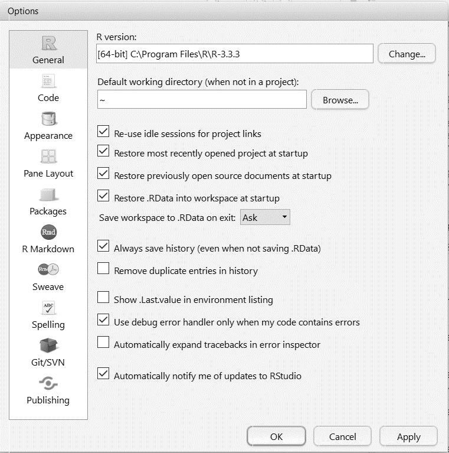
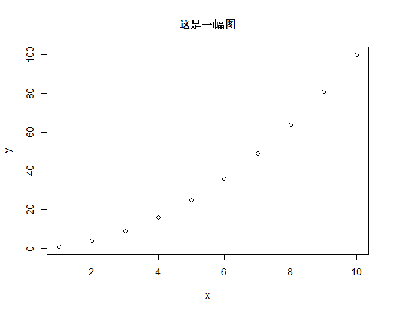
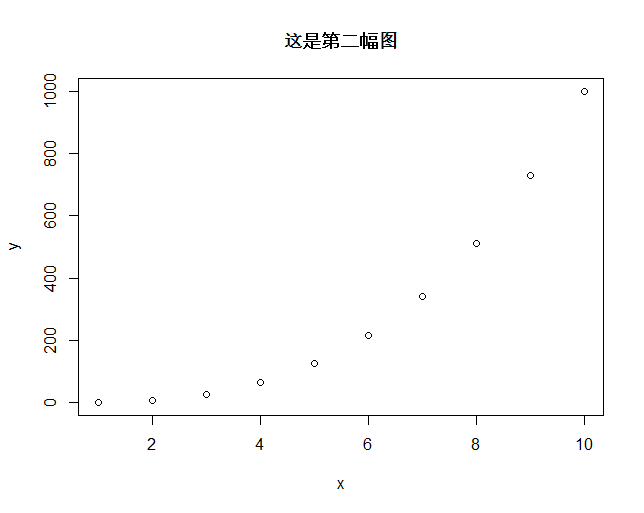
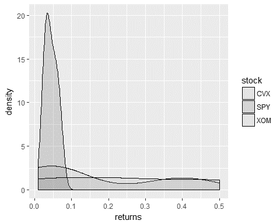

第11章 速度，测试与报告
最后一章其实可以更简单的命名为“大杂烩”（Miscellaneous），它包含了R程序员需要注意的三个重要主题。第一个主题讨论能够加速原生R代码的运行速度以及允许R与C++之间互通的一些方法。第二个主题讨论了测试驱动的程序开发以及R用户如何编写单元测试以提升代码的质量和可靠性。最后的主题是讨论有关研究的可重复性以及如何在R中撰写报告。过去的几年中，R在这三个主题方面都取得了显著的进展。R的核心团队一直在对R的核心源代码进行性能改进1，类似Rcpp, Rcpp11和RInside这些第三方包也为R的性能改进做出了巨大贡献[20, 21]。我们会以testhat包为例展示如何进行代码的单元测试[41]。RStudio团队的近期工作成果以及类似sweave和knitr包的出现使得在R中撰写精简优雅的报告成为可能[145,146]。在本章的最后，我们将展示一个由knitr所生成的.pdf格式的报告样板。
运行时执行的改进
即便对于大多数流行的算法，R都提供了十分高效的实现函数，但是对于某些应用来说，这些实现还是不够快。总体说来，算法的效率以及代码执行的速度这两大问题是每一位编程人员在他们的编程生涯中最终都要面对和解决的。对于任何一个开发人员来说，将自己的代码转化为正确的功能，是首先要关心和解决的问题。在这个首要问题解决了之后，我们才应该考虑对代码进行优化。如果我们想要的答案只需要计算一次就可以得到，而且结果在本质上对运行的时间并不敏感，那么即便代码速度很慢也完全没有关系。Donald Knuth说过一句非常贴切的话：“我们应该忘记小幅度的效率提升，大概97%左右的时间都不要关心效率问题：提前优化是万恶之源[23]。”
理想的情况是，我们编写的所有程序从现在开始都是准确的、可维护的并且有效的。这种神圣的状态代表着我们最终可以达成的目标，但并不是一开始就能够实现的。原则上，一个程序员应该首先确保能够得到正确的结果，然后才考虑将代码的运行优化的越快越好。有些时候，代码的可维护性与代码的效率是两个互相矛盾的目标。具体的商业要求会决定哪一个才是更加重要的目标。
在R中，解决执行速度问题的方法有好几种。第一种就是写出更好的代码。更好是一个相对的概念，从另外一个编程语言来看是快速的代码，从R的角度来说可能并非如此。一个典型的例子就是for循环的使用。下面用R写的代码运行起来就会耗费很长的时间：
sum_with_loop_in_r <- function(max_value) {
sum <- 0
for(i in 1:max_value) {
sum <- sum + i
}
return(sum)
}下面的版本使用了向量化操作，速度的提升是显著的：
sum_with_vectorization_in_r = function(max_value) {
numbers <- as.double(1:max_value)
return(sum(numbers))
}R代码基准测试
我们可以使用microbenchmark包测试上面两种实现方式在运行时间上的相对差距。
library(microbenchmark)
microbenchmark(loop = sum_with_loop_in_r(1e5),
vectorized = sum_with_vectorization_in_r(1e5))
## Unit: microseconds
## expr min lq median
## loop 57615.323 59424.740 60992.7720
## vectorized 260.602 273.673 286.5495
## uq max neval
## 89608.441 96694.469 100
## 294.236 414.349 100向量化版本的代码要快大约213倍！
我们编写的大多数R代码都是解释性代码。compiler包允许我们在R中对某些函数进行编译，这样他们在运行的时候就具有更快的执行速度。关于这个包的更多信息可以参阅这个文档：http://homepage.stat.uiowa.edu/luke/R/compiler/compiler.pdf。 自从R版本2.13.0开始，便有了这个编译包。
compiled_sum_with_loop_in_r <- cmpfun(sum_with_loop_in_r)
microbenchmark(loop = sum_with_loop_in_r(1e5),
compiled = compiled_sum_with_loop_in_r(1e5),
vectorized = sum_with_vectorization_in_r(1e5))
## Unit: microseconds
## expr min lq median
## loop 56746.652 58343.8945 60602.445
## compiled 4688.146 4758.6770 4892.246
## vectorized 249.457 273.8635 284.050
## uq max neval
## 86599.9875 96736.750 100
## 5498.9710 46484.009 100
## 292.3135 473.927 100编译版本要比普通的for循环更快，但是并没有向量化版本的快。cmpfun()函数也绝对不是一个神奇魔弹。如果把它应用到一个已经经过预编译的函数，或者是内部实现是经由编译语言编写的，那么很可能不会有有任何速度上的提升。
Rcpp的解决方案
作为比较，下面用C++编写的同样功能的函数速度就快多了：
long add_cpp(long max_value) {
long sum = 0;
for(long i = 1; i <= max_value; ++i) {
sum = sum + i;
}
return sum;
}R框架允许你在Fortran，C，或者C++中实现更快的代码。这些实现随后可以在R中调用。“Writing R Extensions（编写R扩展）”文档就提供了这个方法的详细说明，文档可以访问这里得到：http://cran.r-project.org/doc/manuals/R-exts.html。但是这个方法并不直接。这里或多或少涉及到用Fortran和C编写R扩展的过程，本书不讨论此内容。
我们转而使用和讨论Rcpp包，此包由Dirk Eddelbuettel和Romain Francois编写和维护。关于Rcpp的相关信息可以访问此处：http://dirk.eddelbuettel.com/code/rcpp.html。 Francois最近公布了这个包的Rcpp11版本。详情和有关的链接可以访问此处：http://blog.r-enthusiasts.com/。Hadley Wickham也提供了一个非常有用的教程：http//adv-r.had.co.nz/Rcpp.html。
简单来说，Rcpp可以让人们在R中用非常简洁的方式编写C++代码。把这些代码跟R连接起来使用也非常容易。用户不需要关心关于C内部API的各种工作机制就可以使代码运行起来。
很多R自带的函数已经是通过编译语言比如Fortran，C或者C++编写的。可以在R的控制台窗口中键入这些函数的名称。如果只是返回了R代码而没有其他的返回结果，那么这个函数就是用R本身编写的。如果返回结果中出现了类似：.C,.Call,， Fortran，.External,.Internal或者.Primitive，那么这些函数就是用编译语言编写的。
下面就是一个调用.Internal()的函数：
lapply
## function (X, FUN, ...)
## {
## FUN <- match.fun(FUN)
## if (!is.vector(X) || is.object(X))
## X <- as.list(X)
## .Internal(lapply(X, FUN))
## }lapply()函数的源代码展示了在调用使用其他语言编写的编译实现代码时混合R的语法是完全可能的。下面是更有趣的部分。这里我们展示如何创建一个C++编译的函数并在R中调用它。
配置步骤：
确保你的计算机中安装了一个可以工作的C++编译器。关于配置此项的更多信息可以参考这里： http://dirk.eddelbuetterl.com/code/rcpp/Rcpp-FAQ.pdf，以及这里http://rstudio.com/ide/docs/packages/prerequisites. Windows用户需要安装
Rtools2包以确保能够使用命令行工具以及MinGW编译器。安装并加载Rcpp包以及它的所有依赖包。
现在我们已经做好了在R中编写并使用C++代码的准备了。我们将用到两个函数cppFunction()和sourceCpp()。 cppFunction()函数允许我们编写内联的C++代码（inline code），而sourceCpp()函数则可以关联一个外部.cpp文件。
library(Rcpp)
# 创建一个C++函数
cppFunction('
long add_cpp(long max_value) {
long sum = 0;
for(long i = 1; i <= max_value; ++i) {
sum = sum + i;
}
return sum;
}'
)这个函数的签名是这个样子：
add_cpp
## function (max_value)
## .Primitive(".Call")(<pointer: 0x10f52fbb0>, max_value)现在这个函数已经编译完成了，我们可以像使用一般R函数那样使用该函数。
add_cpp(1e5)
## [1] 5000050000microbenchmark的测试结果突显了C++实现方式在执行效率上的优势。
microbenchmark(loop = sum_with_loop_in_r(1e5),
compiled = compiled_sum_with_loop_in_r(1e5),
vectorized = sum_with_vectorization_in_r(1e5),
compiled_cpp = add_cpp(1e5))
## Unit: microseconds
## expr min lq median
## loop 73049.461 76640.5945 79635.8810
## compiled 7359.040 7487.9655 7795.9125
## vectorized 804.773 932.9285 1031.9695
## compiled_cpp 79.573 88.2615 98.9385
## uq max neval
## 80676.6600 94618.174 100
## 12101.8610 135353.743 100
## 1373.8565 2148.409 100
## 105.2440 135.781 100C++实现方式比原生的R循环起码快了800倍。这对于那些想在R编程环境中融入编译语言速度优势的人们来说无疑是一个激动人心的消息。这样的速度表现暗示了普通的R用户不需要再纠结R的速度问题。因为对执行速度有要求的“关键任务”现在都可以用C++来编写了。
在R代码中编写C++内联函数提供了一个完全切实可行并且有效的解决方案。然而，如果我们可以将C++的代码部分拆分成单独的文件则会显得整个解决方案更加干净。sourceCpp()就允许我们将这些代码抽出来放在一个外部.cpp文件中去。 下面是一个.cpp文件的例子：
# include <Rcpp.h>
using namespace Rcpp;
// [[Rcpp::export]]
long add_2_cpp(long max_value) {
long sum = 0;
for(long i = 1; i <= max_value ; i++) {
sum = sum + i;
}
return sum;
}sourceCpp()函数会首先编译这个函数并创建一个具有相同名称的R版本的函数，然后写入到当前活动的R环境中。（http://adv-r/had.co.nz/Rcpp.html）
sourceCpp('Chapter_11/add_2_file.cpp')
add_2_cpp(100)
## [1] 5050用RInside在C++中调用R
有时候我们需要在C++程序中直接调用R的某些功能。RInside包“提供了一个环绕R内置API的抽象层，并且将在应用中获取R实例变得更加简单。而且，得益于Rcpp提供的类，在R和C++中交换数据变得非常直接[18]。”
在他的Rcpp书中，Eddelbuettel提供了一些关于如何编译和运行R和C++糅合代码的有用示例。下面就是一则：
#include <RInside.h>
int main(int argc, char *argv[]) {
// create an embedded R instance
RInside R(argc, argv);
// assign a char* (string) to "txt"
R["txt"] = "Hello, world!\n";
// eval the init string, ignoring any returns
R.parseEvalQ("cat(txt)");
exit(0);
}用testthat编写单元测试
代码测试是很多开发人员都想要回避的，因为这项工作总被认为是非常无聊和枯燥的，甚至是新奇的。但这样的认识与真相是背道而驰的。因为每当我在我的编程工作流程中采纳了测试驱动的方法，我都能看到编程生产率的提升以及代码中错误发生率的降低。测试驱动的开发更是一种心态，而不仅仅是一些形式上的要求。它的基本想法可以归纳为下面几点：
1. 概念层面上来说，将待完成项目的功能分拆为许多小的模块化的成分。这样做是为了让每一个成分（函数）只做一件事情并且做好。
2. 针对每一个函数编写一个测试。刚开始的时候，让测试返回错误的结果。
3. 运行所有测试。你将看到测试返回错误的信息。
4. 开始编写能够实现所需功能的代码。
5. 再次运行测试。这一次，大多数代码都应该通过测试。
6. 保持代码重构，并且保证所有的测试都能够通过。
在R中最受欢迎的代码测试包是：RUnit和testthat包。后者是Hadley Wickham的另外一个精彩贡献，关于它的更多信息，包括开发动机以及使用方法可以访问：http://adv-r.had.co.nz/Testing.html。
下面这个例子就将testthat加入到我们的工作流程中去。这个例子中我们的任务是在给定一个价格向量的基础上计算对数收益率。根据上面的归纳，我们首先写出函数的框架，然后编写一个返回错误的测试：
# 定义函数
convert_to_returns <- function(prices) {
return(9)
}这里的初始测试会返回错误的结果。context()函数可以帮助将相关的功能聚合在一起。test_that()函数将所有预期的行为都捆绑在了一起。而测试本身以expect_关键词开头：
require(testthat)
# 用context()将所需的功能聚合起来
context("Price to log-return conversion")
# 用expect_that()定义我们期待的结果
test_that("convert_to_returns produces the correct values", {
# 对于这些输入
input_prices <- c(100, 101, 102, 103, 99)
# 我们期待返回这些结果
expected_returns <- c(0.009950331,
0.009852296, 0.009756175, -0.039609138)
# 验证实际返回值与期待值是否等同
expect_equal(expected_returns,
convert_to_returns(input_prices))
})当我们运行这个测试之后，会得到下面的输出结果：
## Error: Test failed: 'convert_to_returns produces
## the correct values'
## Not expected: expected_returns not equal to
## convert_to_returns(input_prices)
## Numeric: lengths (1, 4) differ.接下来是时候继续加入我们的执行代码了。我们将加入一小块功能然后确认它可以通过我们的测试：
# 定义函数
convert_to_returns <- function(prices) {
return(diff(log(prices)))
}再运行测试之后，就没有错误产生了。此处，我们可以增强测试函数的功能来检查当价格向量长度小于2时触发一条合适的错误信息。在实施该测试之前，我们需要该测试先返回错误信息。
# 验证错误信息
input_prices <- c(100)
msg <- "Not enough price entries."
expect_message(msg, convert_to_returns(input_prices))
## Error: expected_message no messages shown现在我们重写函数以考虑这个极端情况：
# 检查极端情况的函数
convert_to_returns <- function(prices) {
if(length(prices) < 2) {
message("Not enough price entries.")
}
return(diff(log(prices)))
}其实，我们可以就多个场景的多个期望情形进行测试。关于测试功能的完整列表可以访问这个网页：http://adv-r.had.co.nz/Testing.html。另外一种运行测试的方法是创建一个单独的测试源代码文件然后运行下面的命令：
test_file("example_test_file.r")使用knitr撰写文档
到目前为止，我们对编写R代码的讨论集中于操作，分析和可视化数据。基于此，我其实已经隐含的提到了这本书所建议采纳的特定工作流程。工作流程是完成某项任务系统性的方法路线，允许量化分析师或者开发人员更好的管理他们的研究，更轻松的重现他们的分析结果，以及更稳健的将他们的研究发现传播给大众或者其他感兴趣的群体。一个典型的工作流程可能包含以下几个步骤：
- 就一个特定的交易策略或者市场微观结构事件构想一个假设。
- 收集测试该假设所涉及到的必要数据。
- 转换，处理和过滤该数据。
- 对过滤后的数据集，编写代码进行相关计算。
- 将计算结果可视化并生成一些汇总统计量。
这些步骤中的最后一步就是对重要发现结果进行有效和准确的重现。因为外部的观察者需要能够及时和准确的重现别人研究后声称已经发现的结果。这也是科学得以前进和发展的动力。那我们怎么才能让这样的过程更加容易呢？
就实际情况而言，外部观察者可能需要得到最原始的数据，以及生成图表和分析结果的源代码。在当前的学术界和业界，普遍的做法是将代码，数据和文档以最终出版物的形式松散的捆绑在一起。然而，从浩瀚的学术出版物中获得这些资料是一件非常困难的事情。
我们来看一下，为什么说把数据，代码和文档松散捆绑的方式可能会带来麻烦。试想一下一个研究人员需要在一个研究建议书中展示几十份图表。正确的标识这些文件，并且跟踪它们的变化的可能性会随着问题本身复杂度的增加而降低。当研究人员需要在多个研究项目中跳转的时候，会发生什么呢？把这些所有的资源管理好会变得更加困难。另外一个问题是当原始数据发生变化，那么所有的分析都要重做，也就会生成一批不同的图表和分析结果。
解决这些 问题的方案之就是实将代码和数据糅合在一起，然后将代码嵌入到文档中去，这个文档需要具备一种合适的格式。我们可以用knitr包来完成这个任务。Yihui Xie (knitr包的作者)提供了一种将R代码、LaTeX和Markdown语法编织在一起的简便途径。LaTeX和Markdown是创建美观的.pdf文件和.html文档的流行语法。knitr的美好之处就在于它可以将R代码糅合到LaTeX和Markdown代码中去。
下面的两个步骤允许我们将所有需要的元素组合起来，形成一个切实可行的方案：
- 创建一个.rnw文件，里面包含R代码，以及LaTeX或Markdown语法编写的代码。
- 用pdfLaTeX编译这个.rnw文件，生成.tex和.pdf文件。
我们将使用RStudio(http://www.rstudio.org)来完成这两个步骤。当然，这两个步骤的任务也可以在R自带的控制台中通过命令行操作实现。RStudio只是将这个工作流程进行了简化。RStudio是R语言的一个完整功能的集成开发环境（IDE），可以从此处免费下载获得：http://rstudio.com/ide/download/。根据使用的操作系统的类型，合适版本的LaTeX编译器也需要事先安装好。Window系统下的LaTeX编译器（MikeTex）可以从此处下载获得：http://miketex.org/download。Mac用户可以从http://www.tug.org/mactex/获取MacTex。下面是需要用到的配置步骤：
- 打开RStudio，在控制台窗口内键入命令，用以安装并加载knitr包：install.packages("knitr"); require(knitr)。
- 点击Tool -> Options -> Sweave，并确保选择knitr和pdfLaTeX选项。
- 在RStudio中，点击File -> New -> R Sweave。
- 当完成.rnw文档后，通过点击compile PDF按钮将其编译成.pdf文件。

图11.1 设置knitr和pdflatex
下面的Github页面有关于如何使用knitr的实例：https://github.com/yihui/knitr-examples/。我们挑选其中一个实例，稍加修改以演示这个包的一些基本功能。
\documentclass{article}
\usepackage[T1]{fontenc}
\begin{document}
This is an example LaTeX document with some embedded R code woven in for convenience.
<<foo, fig.height = 4>>=
x = 1:10
y = x ^ 2
plot(x, y, main = "This is a graph")
@
行内表达可以使用\verb|\Sexpr{}|，比如$\pi=\Sexpr{pi}$，\Sexpr{2.3492e7}和\Sexpr{x / 2.0}。
\subsection*{A different subsection}
我们可以插入绘图而隐藏代码。这个功能由代码块的参数列表完成。
<<foo2, fig.height = 3, echo = FALSE>>=
x = 1:10
y = x ^ 3
plot(x, y, main = "This is a second graph")
@
任何R代码都可以在knitr提供的代码块中运行。下面一个例子加载\texttt{ggplot2},并创建一个漂亮的密度直方图。
<<foo3, fig.height = 6, tidy = FALSE >>=
require(ggplot2)
my_data = data.frame(returns = c(0.03, 0.04, 0.05,
0.032, 0.01, 0.23, 0.4, 0.05, 0.066, 0.5),
stock = c("SPY", "CVX", "CVX", "SPY",
"XOM", "XOM", "CVX", "SPY", "SPY", "XOM"))
ggplot(my_data, aes(x = returns, fill = stock)) +
geom_density(alpha = 0.2)
@
\end{document}图11.2和11.3展示了.rnw文档通过pdfLaTeX编译之后的.pdf输出样式。
这是一个LateX样例文档，已经包含R代码以方便编译。
x = 1:10
y = x ^ 2
plot(x, y, main = "这是一幅图")
行内表达可以使用\Sexpr{} ，比如π = 3.1415927，2.3492 × 10 7 和0.5, 1, 1.5, 2, 2.5, 3, 3.5, 4, 4.5, 5。我们可以插入绘图而隐藏代码。这个功能由代码块的参数列表完成。
x = 1:10
y = x ^ 3
plot(x, y, main = "这是第二幅图")
图11.2 pdf文件输出样式
任何R代码都可以在knitr提供的代码块中运行。下面一个例子加载ggplot2，并创建一个漂亮的密度直方图。
require(ggplot2)
## Loading required package: ggplot2
my_data = data.frame(returns = c(0.03, 0.04, 0.05,
0.032, 0.01, 0.23, 0.4, 0.05, 0.066, 0.5),
stock = c("SPY", "CVX", "CVX", "SPY",
"XOM", "XOM", "CVX", "SPY", "SPY", "XOM"))
ggplot(my_data, aes(x = returns, fill = stock)) +
geom_density(alpha = 0.2)
图11.3 一个含ggplot2图的pdf文件
总结
本章讨论了所有严肃的R程序员都需要熟悉和掌握的四个概念。它们分别是：执行速度，R和C++代码的互操作性，代码能够通过单元测试的可测试性，以及通过R代码和LaTeX或Markdown语法的可重复性研究。代码执行的效率是通过编写”更好的”R代码以及通过利用好类似Rcpp和Rcpp11这样的工具包来达到的。互操作性的概念在本章只是略有提及，我们推荐使用RInside包来实现。通过RInside包，R还能够直接调用C++代码。不同实现方法之间的耗时可以利用microbenchmark包进行比较。本章还演示了对于某些类型的问题，C++方法有显著的速度优势。通过testthat包的使用实例，本章演示了代码的可测试性。搭配RStudio框架和knitr包，可以生成一个既包含R代码也包含LaTeX语法的.pdf文档。
翻译：冯凌秉 审校：杨环